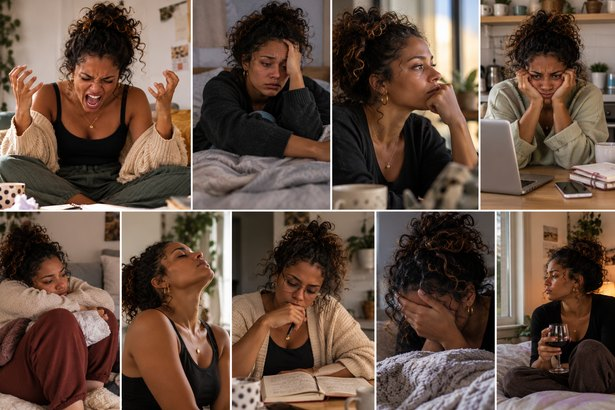
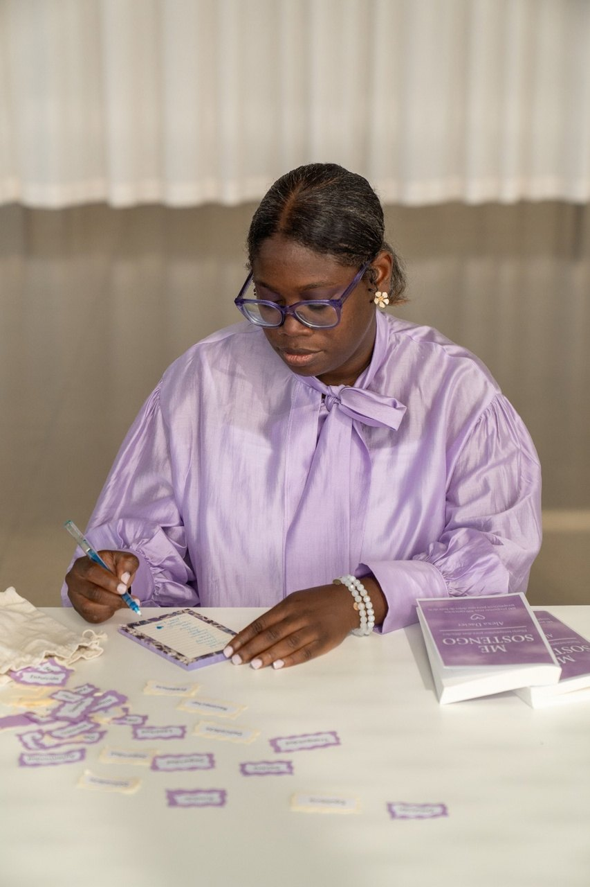
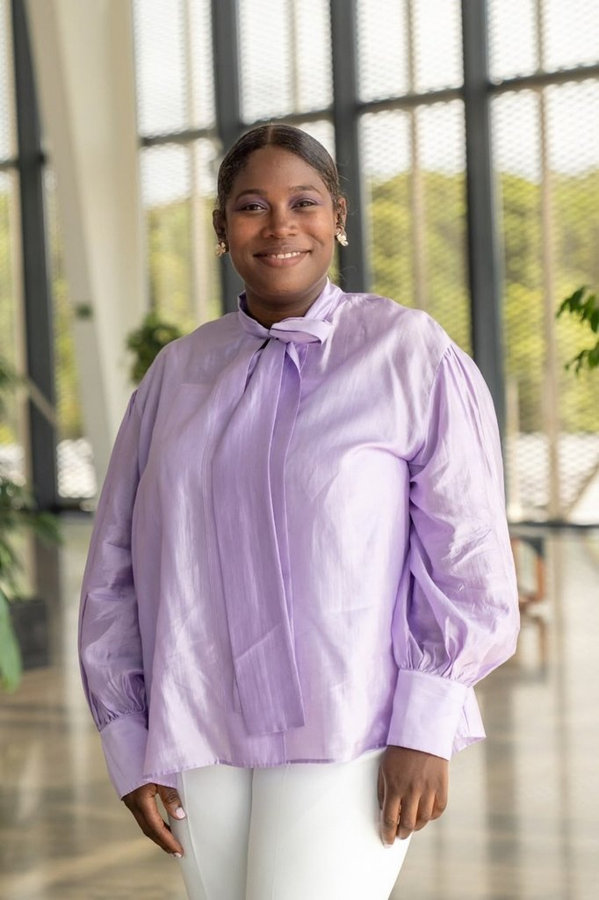
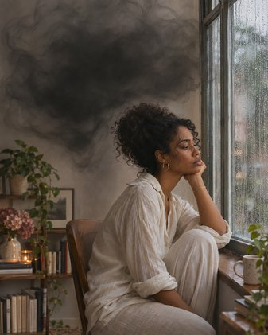
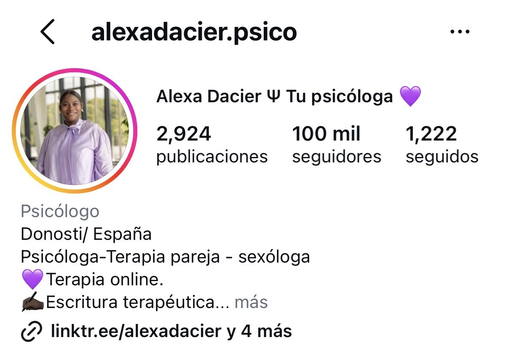
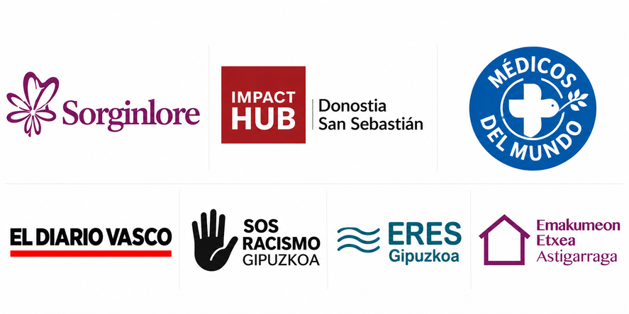
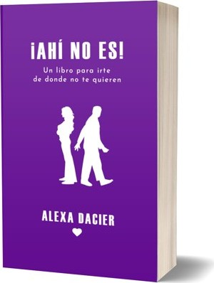
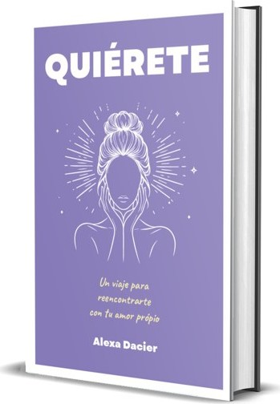
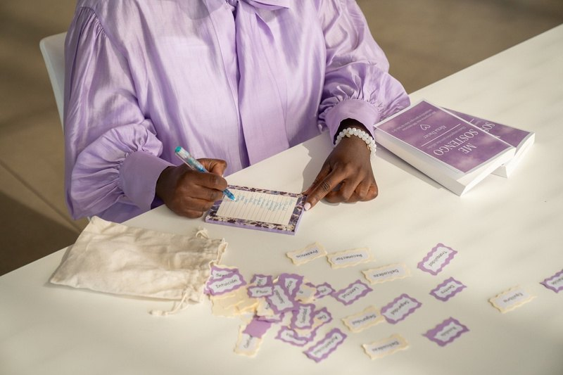
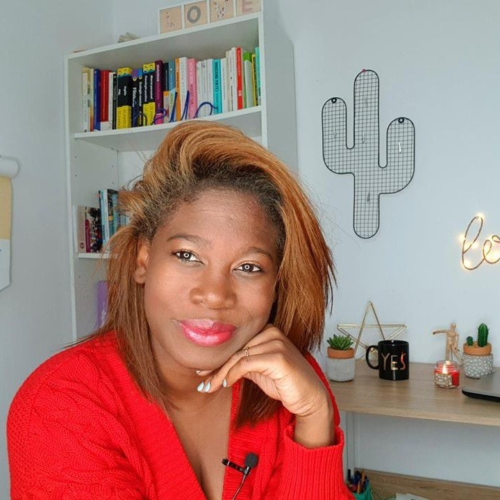

01
Petronila, sal de Disney
Un ensayo crítico con la industria del pensamiento positivo y con la idea de que todo se consigue con esfuerzo, autoestima y disciplina.
La vida no es Disney. Y la psicología no debería fingir que lo es.


«Escribo para que podamos comprendernos sin dejar de mirar el mundo en el que vivimos.»
Tres obras independientes, unidas por una misma mirada sobre la vida adulta.

Un ensayo crítico con la industria del pensamiento positivo y con la idea de que todo se consigue con esfuerzo, autoestima y disciplina.
Una obra íntima y práctica sobre las crisis existenciales, la identidad, las decisiones y la sensación de haberse perdido.

La otra cara del amor propio, para mujeres que quieren una relación sin tener que justificarse por desearla.

Una comunidad que busca entender por qué vivir, amar y sostenerse puede resultar tan difícil.
La psicología también sucede fuera de las redes sociales.
Llevo la salud mental a espacios donde también se habla de derechos, racismo, migración, maternidad y vida cotidiana, porque el bienestar emocional depende de las condiciones en las que cada persona intenta sostener su vida.



Ya publicados¡Ahí no es! (2022)

«Quiero escribir los libros que nos habría gustado encontrar cuando descubrimos que la vida adulta era bastante más complicada de lo que nos habían contado.»